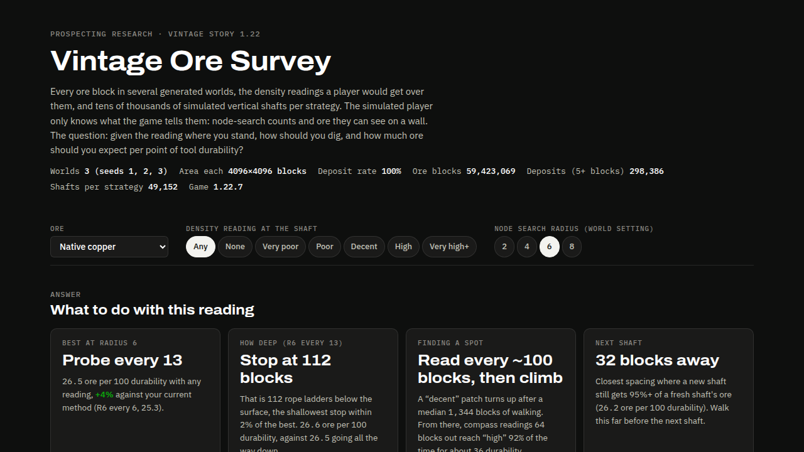
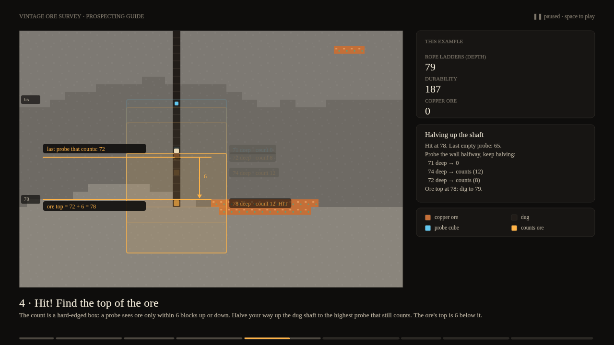
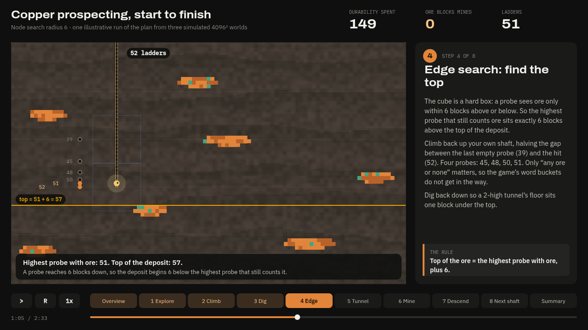
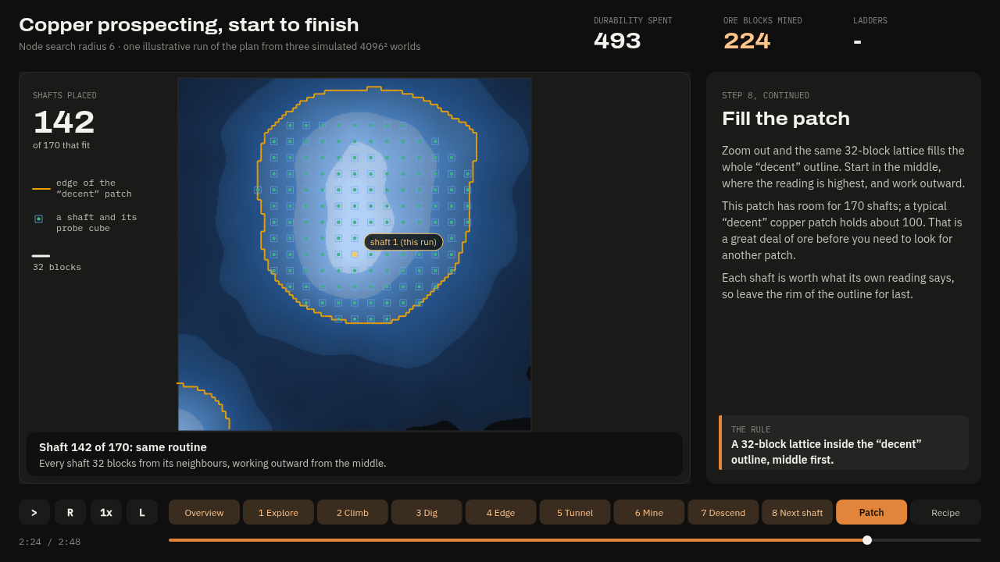

Project Vintage Ore
Vintage Story hides its metal underground, and the only tool that tells you where is the prospecting pick. It gives you two things: a density reading for the spot you are standing on (“poor”, “decent”, “high”), and a node search that counts the ore in a cube around you. Everything else is up to you.
My method was a staircase: dig six blocks down, take a node search, dig one to the side, repeat. It worked. I wanted to know how well.
So, naturally, I built a lab instead of mining. A server mod generates worlds and records every ore block and every reading the game would give. A simulator digs tens of thousands of virtual shafts under different strategies and scores each one in ore per point of tool durability. Three worlds of 4096×4096 blocks, 59 million ore blocks, about 49,000 shafts per strategy.

The plan
For native copper with a node search radius of 6, this is what the simulations settled on:
- Read every ~100 blocks while exploring, until the density reading says “decent”.
- Climb. Take four compass readings 64 blocks out, step to the best, repeat.
- Dig a shaft and node search every 13 blocks. The cubes just touch, so nothing is missed. Count your ladders.
- Edge search at a hit. Halve the gap back up your shaft; the top of the ore is the highest probe that still counts it, plus 6.
- Tunnel toward the rising count three blocks at a time. Stop at visible ore. Give up after 120 durability.
- Mine the whole body, probe again, and carry on down to the stop depth.
- Move over and dig the next shaft. Closer than the spacing below and you are re-digging ore you already took.
| Ore | Stop at (ladders) | Shafts apart |
|---|---|---|
| Copper | 112 | 32 |
| Tin (cassiterite) | 80 | 24 |
| Bismuthinite | 80 | 20 |
| Iron (hematite) | 80 | 80 |
The headline number is modest. For copper this plan mines about 26.5 ore blocks per 100 durability, against 25.3 for probing every 6 blocks. Most of the value is in the decisions you make before you dig: reading the surface, spacing your shafts, and not stopping at the first deposit (that alone drops it to 18.6).
What surprised me
The count is a hard-edged box. A probe sees ore only within 6 blocks up or down, so the highest probe that still counts ore sits exactly 6 above the top of the deposit. That turns finding the ore’s height into about four probes up your own shaft.
Being clever did not help much. I built a probabilistic model of deposit shapes to aim the tunnels. It landed between 9% worse and 5% better than the simple routine. A count tells you how much ore is nearby, not which way it is.
One patch is a lot of shafts. A typical “decent” copper patch has room for about a hundred at the right spacing.
The game has a seam. For pentlandite, chromite, ilmenite and one of the coals, the ore map has hard straight edges along the 512-block region borders. I think it comes from a scale setting that does not divide the region size. I have not reported it.
What to distrust. The game reports node search counts as words (trace, small, medium…), not numbers, but my tunnel-steering simulation used exact counts. Its direction-finding results are optimistic. The edge search only needs “ore or none”, so it holds up. Re-running it with the real buckets is next.
Three animations
I asked Claude Opus and Claude Sonnet for the same thing, a p5.js animation of the finished guide, then had Sonnet read both and merge them. They tell the same eight-step story and disagree about almost everything else.



Space pauses any of them; the left and right arrows change scene.